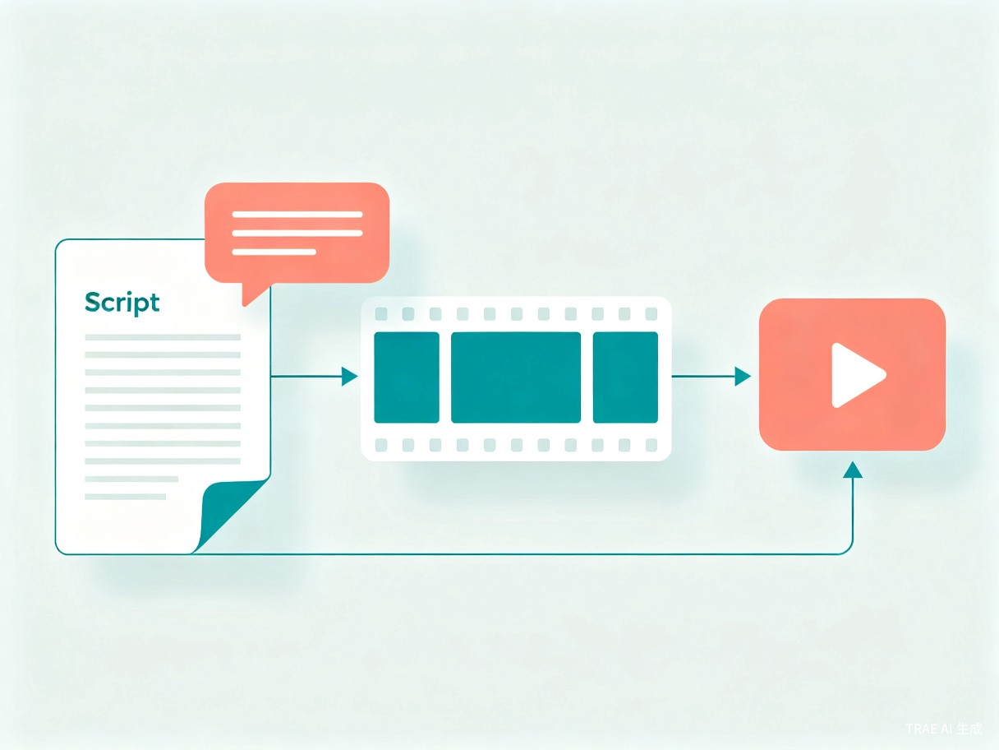

通过对话的方式了解你的产品和喜好，做出个人专属风格的短视频。一个懂你、懂产品、懂平台的AI短视频创作伙伴。
AI视频生成工具在过去一年里爆发式增长。可灵AI全球用户超6000万，即梦AI日处理视频需求480万次，美图设计室服务近200万电商卖家[1][2][3]。技术门槛已经降到极低——任何人花几分钟就能用文字描述生成一段视频。
但"能做"和"能商用"之间有一道巨大的鸿沟。电商店主需要的不只是一段画面，而是一个有钩子、有节奏、有卖点、符合平台调性的完整带货视频。这涉及脚本策划、分镜设计、素材风格、音乐匹配、平台规范等多个环节的协同。当前市面上的工具各自解决其中一个环节，但没有一个产品把所有环节串联成一个流畅的创作体验。
更根本的问题在于：中小电商卖家不知道"拍什么才好"。他们熟悉自己的产品，但不熟悉短视频的创作规律。他们需要的不是一个更强大的生成工具，而是一个能和他们对话、理解他们的产品、帮他们想创意、把模糊的想法变成可执行方案的AI伙伴。
核心假设：如果AI能把用户的商业意图翻译成高质量的创作素材（脚本、分镜、提示词、风格参数），并自动调用视频生成工具完成最终成片，就能大幅降低电商短视频的制作门槛，让卖家把精力集中在产品和创意本身。
当前AI短视频生成市场由四类玩家主导，各自覆盖不同的能力环节：
| 产品 | 所属公司 | 核心定位 | 对话式交互 | 电商带货覆盖 |
|---|---|---|---|---|
| 可灵AI | 快手 | 全能AI视频生成平台，V3版本指令遵从度和时序稳定性行业领先 | 不支持 | 中等 |
| 即梦AI | 字节跳动 | 抖音生态AI创作平台，音画同步生成，中文适配评分4.9/5 | 部分支持（单向输入） | 较强 |
| 美图设计室/开拍 | 美图 | 电商视觉+口播视频工具链，10秒生成带货视频 | 不支持 | 极强 |
| 剪映AI | 字节跳动 | 全能AI视频编辑器，2026版上线AI Agent支持自然语言指挥剪辑 | 部分支持（剪辑指令） | 较强 |
| Hilight AI | 营赛AI | 电商带货视频Multi-Agent，10+Agent协同生成 | 表单式 | 极强 |
通过系统调研发现，"对话式AI Agent + 短视频全链路生成"是当前市场的明确空白。现有产品的交互方式集中在三个层次：
可灵、海螺等工具采用单次文本输入生成视频，无多轮交互，无需求澄清。
美图设计室、Hilight AI通过模板选择和表单填写来定义视频参数，流程固定。
剪映2026版支持自然语言指挥剪辑操作，但前提是已有素材，偏向"剪辑"而非"创作"。
这三个层次都跳过了最关键的一步——理解用户的商业意图和创作需求。没有产品支持通过多轮对话来挖掘目标受众、品牌调性、传播平台、预算等关键信息，也没有产品支持"对话式脚本共创"或"对话式分镜调整"。
技术基础设施已经就绪——文生视频（可灵/即梦）、数字人（剪映/美图）、AI脚本（各平台基础能力）各环节技术成熟。缺的是一个对话式AI Agent来串联和编排这些能力，把"想法"变成"成片"的全流程变成一场自然的对话。
背景：经营一家淘宝女装店3年，月GMV 15-30万，团队2人（自己+客服）。每天需要产出3-5条推广短视频用于逛逛、抖音、小红书。
痛点：找真人拍摄成本高（单条500-2000元），AI视频质量不稳定，自己写不出好脚本，不知道什么风格在哪个平台更受欢迎。试过可灵、即梦等工具，但产出的视频"像AI做的"，转化效果差。
期望：有一个懂她产品、懂她品牌风格的AI助手，告诉她"这条裙子适合拍什么类型的视频""这个卖点怎么表达更有吸引力"，然后帮她把视频做出来。
| 用户类型 | 特征描述 | 核心诉求 | 使用频率 |
|---|---|---|---|
| 电商店主/运营 | 中小卖家，缺乏专业视频团队，有持续的内容产出需求 | 降低视频制作门槛，提高产出效率和质量 | 每天3-5条 |
| 内容创作者 | 有一定AI工具使用经验，想提升效率和个性化 | 更高效地尝试新创意，形成个人风格 | 每周5-10条 |
| 代运营/服务商 | 服务多个品牌客户，需要批量、标准化的视频产出 | 为不同客户快速切换风格和方案 | 每天10+条 |
新品推广视频：上架新款女装后，告诉AI产品特点、目标人群、价格区间，AI通过对话了解品牌调性后，生成完整的带货视频方案（脚本+分镜+素材+成片）。
爆款视频复刻：看到竞品或同行的爆款视频，描述给AI或上传截图，AI分析其成功要素后，结合用户自己的产品特点生成类似风格的原创视频。
多平台适配：同一条产品需要在不同平台（抖音、小红书、淘宝逛逛）发布，AI根据各平台的内容规范和用户偏好，自动调整视频的时长、节奏、文案风格。
风格探索：尝试新的视频风格（如从"温柔知性"切换到"活泼俏皮"），通过对话描述想要的风格感觉，AI生成多个方案供选择，逐步形成稳定的品牌视频风格。
专属短视频大师是一个基于对话式AI的短视频创作系统。用户不需要学习任何工具的操作方法，只需要像和一个经验丰富的短视频导演聊天一样，描述自己的产品、想法和需求，系统就会把模糊的商业意图翻译成高质量的创作素材，并自动调用视频生成工具完成最终成片。

通过多轮对话理解用户的产品特点、目标受众、品牌调性、传播平台、预算约束。不是让用户填表单，而是像朋友聊天一样自然地获取关键信息。
基于对话理解，自动生成脚本（钩子设计、卖点排列、情绪曲线）、分镜方案、画面提示词、音乐建议。支持用户通过对话实时调整和迭代。
将生成的素材自动对接视频生成工具（可灵/即梦等），完成最终视频渲染。用户可以预览、反馈、修改，直到满意。
| 维度 | 现有工具 | 专属短视频大师 |
|---|---|---|
| 交互方式 | 填表单 / 写Prompt / 选模板 | 自然对话，多轮交互 |
| 需求理解 | 用户自己想清楚再输入 | AI主动引导、澄清、细化 |
| 创作流程 | 跳到"生成"环节 | 从"想法"到"成片"全流程覆盖 |
| 个性化 | 每次从零开始 | 记忆用户偏好，越用越懂你 |
| 迭代方式 | 手动调参数 / 重新生成 | 用自然语言描述修改意见 |
| # | 功能模块 | 功能描述 |
|---|---|---|
| F1 | 对话式创作工作台 | 核心交互界面。用户通过自然语言与AI对话，描述产品、表达需求、反馈修改意见。AI主动提问澄清模糊信息，引导用户完成从创意到成片的全流程。支持文字、图片（产品图/参考图）输入。 |
| F2 | 智能脚本生成 | 基于对话中获取的产品信息和创作意图，自动生成带货短视频脚本。包含开头钩子、卖点展开、行动号召的完整结构。支持按平台（抖音/小红书/逛逛）自动调整文案风格和时长。用户可通过对话修改脚本的具体段落。 |
| F3 | 分镜方案设计 | 将脚本拆解为可视化分镜方案，每个分镜包含画面描述、运镜方式、时长建议、文字/字幕位置。用户可以对话调整单个分镜（如"第二个镜头换个角度""背景换成户外"）。 |
| F4 | AI素材生成 | 根据分镜方案自动生成画面素材：商品图风格化处理、AI模特生成、场景背景生成、产品细节特写。对接文生图工具（如即梦AI图片生成能力）。 |
| F5 | 视频合成与渲染 | 将脚本、分镜、素材自动组合，调用视频生成工具（可灵/即梦API）完成最终视频渲染。支持添加背景音乐、字幕、转场效果。输出符合各平台规格的视频文件。 |
| F6 | 品牌风格记忆 | 系统自动记忆用户的品牌信息（产品类型、目标人群、品牌调性、常用风格偏好）。后续对话中自动应用已记忆的偏好，无需重复描述。用户可随时查看和修改已保存的风格配置。 |
| F7 | 创作历史管理 | 保存所有创作记录（对话历史、生成的脚本、分镜、视频）。支持按项目/产品分类管理，快速复用和迭代历史方案。提供"基于上次方案微调"的快捷入口。 |
| F8 | 多平台适配 | 一键将同一创作方案适配为不同平台的版本：抖音（竖屏9:16，15-60秒）、小红书（竖屏3:4，30-90秒）、淘宝逛逛（竖屏9:16，15-45秒）。自动调整文案风格、画面比例、节奏。 |
业务逻辑：对话式创作工作台是整个系统的核心入口和交互中枢。用户进入后看到一个聊天界面，AI以"短视频导演"的身份主动打招呼，询问用户今天想做什么。整个创作流程在对话中自然推进：了解产品 → 确定方向 → 生成脚本 → 设计分镜 → 生成素材 → 渲染视频 → 反馈修改。
交互逻辑：用户在输入框中输入文字或上传图片。AI回复包含文字建议和操作卡片（如"查看脚本"、"预览分镜"、"生成视频"）。关键节点AI会主动推送下一步建议，用户也可以随时跳转到任意环节。
规则约束：单条消息上限2000字；图片上传支持JPG/PNG，单张不超过10MB，每次最多5张；对话历史保留最近50轮；AI回复延迟不超过5秒。
边界与异常：网络超时时显示"正在思考中..."并支持重试；AI无法理解用户意图时，主动追问而非生成低质量内容；对话中涉及敏感内容时给出提示并拒绝执行。
业务逻辑：脚本生成模块接收对话中沉淀的产品信息和创作方向，按照"钩子-卖点-号召"三段式结构生成带货短视频脚本。钩子部分在前3秒抓住注意力，卖点部分按优先级排列2-4个核心卖点，号召部分引导用户点击/购买。
交互逻辑：AI在对话中直接展示生成的脚本内容，用户可以用自然语言修改任意段落（如"开头换成提问式""第二个卖点加入使用场景"）。修改后AI即时更新脚本并标注变更部分。
规则约束：脚本字数按平台规范自动控制（抖音15-60秒对应50-200字）；每个卖点必须有具体的产品细节支撑，不允许空洞描述；脚本中必须包含至少一个明确的行动号召。
业务逻辑：将确认后的脚本拆解为逐镜头的分镜方案。每个分镜包含：画面内容描述、运镜方式（固定/推/拉/摇/移）、预计时长、字幕/文字叠加位置、背景音乐节奏点。分镜数量根据视频总时长自动计算，通常每3-5秒一个镜头。
交互逻辑：分镜以时间线卡片的形式展示在对话中，用户点击单个分镜可查看详情和修改。支持对话式修改（如"第三个镜头换成产品特写""整体节奏加快"）。修改后自动更新后续分镜的时长分配。
业务逻辑：根据分镜方案中每个镜头的画面描述，自动调用文生图API生成对应的画面素材。对于产品展示类镜头，优先使用用户上传的产品原图进行风格化处理；对于场景/模特类镜头，使用AI生成。每个分镜生成1-2张候选画面供用户选择。
交互逻辑：生成的素材以缩略图网格的形式嵌入对话中，用户点击可放大查看。支持对话式调整（如"模特换成更年轻的感觉""光线再暖一点"）。选定的素材自动关联到对应分镜。
规则约束：单张素材生成时间不超过30秒；每个分镜最多生成3张候选（避免token浪费）；产品原图优先级高于AI生成图。
业务逻辑：将确认的分镜方案和选定素材自动组合，调用视频生成工具API完成最终渲染。系统自动添加字幕（从脚本提取）、背景音乐（根据品牌调性推荐）、转场效果。渲染完成后生成符合目标平台规格的视频文件。
交互逻辑：渲染过程中在对话中显示进度。完成后自动播放预览，用户可以给出反馈意见（如"节奏太快了""换个背景音乐"），系统根据反馈重新渲染。满意后可一键下载或直接分享到目标平台。
规则约束：视频分辨率不低于1080p；单条视频渲染时间不超过3分钟；输出格式支持MP4（H.264）；文件大小控制在各平台上传限制内。
业务逻辑：系统从用户的对话历史和创作记录中自动提取品牌相关信息，构建用户画像。包括：产品品类、价格区间、目标人群画像、品牌调性关键词、常用视觉风格、偏好的视频节奏和时长。这些信息在后续创作中自动应用，减少重复沟通。
交互逻辑：用户可以在设置页面查看和管理已记忆的品牌信息。支持手动添加、修改、删除。当AI应用已记忆的偏好时，会在对话中简要说明（如"根据您之前偏好的温柔知性风格，我为您设计了..."）。
业务逻辑：每次完整的创作流程（从对话开始到视频输出）保存为一个项目。项目包含完整的对话记录、中间产物（脚本、分镜、素材）和最终视频。支持按产品、时间、平台等维度分类和检索。
交互逻辑：左侧边栏展示项目列表，支持搜索和筛选。点击项目可查看完整创作过程和所有产物。提供"基于此方案新建"功能，复用历史方案并在此基础上调整。
业务逻辑：基于已确认的创作方案，自动生成适配不同平台的视频版本。系统内置各平台的内容规范（时长限制、画面比例、文案风格偏好、热门音乐趋势），自动调整脚本、分镜和输出参数。
交互逻辑：在视频预览阶段，用户可点击"适配更多平台"按钮，选择目标平台后系统自动生成对应版本。各版本并列展示，用户可分别预览和微调。
规则约束：内置平台规范需定期更新（至少每月一次）；文案风格调整需符合平台社区调性，不能简单复制粘贴。
flowchart TB
subgraph 用户层
U[对话式创作工作台
Web界面]
end
subgraph AI Agent层
D[对话理解引擎
意图识别+上下文管理]
S[脚本生成模块]
B[分镜设计模块]
M[风格记忆模块]
end
subgraph 执行层
I[素材生成引擎
文生图API]
V[视频渲染引擎
文生视频API]
E[合成引擎
字幕+音乐+转场]
end
subgraph 外部服务
K[可灵AI / 即梦AI
视频生成API]
P[平台规范库
抖音/小红书/逛逛]
end
subgraph 数据层
DB[(用户画像库
创作历史库)]
end
U --> D
D --> S
D --> B
D --> M
S --> B
B --> I
B --> V
I --> E
V --> E
E --> U
M <--> DB
K --> V
P --> D
P --> E
sequenceDiagram
participant User as 用户
participant AI as 专属短视频大师
participant Script as 脚本引擎
participant Storyboard as 分镜引擎
participant Asset as 素材引擎
participant Video as 视频引擎
User->>AI: 上传产品图，描述需求
AI->>AI: 检索品牌记忆，识别产品信息
AI->>User: 追问目标人群和平台
User->>AI: 回答补充信息
AI->>Script: 生成脚本方案
Script-->>AI: 返回脚本
AI->>User: 展示脚本，征求修改意见
User->>AI: "开头换成提问式"
AI->>Script: 修改脚本
Script-->>AI: 返回修改后脚本
AI->>Storyboard: 生成分镜方案
Storyboard-->>AI: 返回分镜
AI->>User: 展示分镜方案
User->>AI: 确认分镜
AI->>Asset: 生成画面素材
Asset-->>AI: 返回素材
AI->>User: 展示候选素材
User->>AI: 选择素材
AI->>Video: 渲染视频
Video-->>AI: 返回视频
AI->>User: 预览视频
User->>AI: "节奏再快一点"
AI->>Video: 重新渲染
Video-->>AI: 返回视频
AI->>User: 最终预览 + 下载
作为一个AI驱动的产品，"质量"需要从多个维度定义和衡量：
| 质量维度 | 衡量指标 | 目标阈值 |
|---|---|---|
| 脚本质量 | 结构完整性（钩子/卖点/号召三段齐全）、卖点具体性、行动号召明确性 | 人工评审通过率 ≥ 80% |
| 对话理解 | 意图识别准确率、多轮上下文保持率、追问合理性 | 意图识别 ≥ 90%，上下文保持 ≥ 85% |
| 分镜合理性 | 镜头衔接流畅度、时长分配合理性、运镜建议可执行性 | 人工评审通过率 ≥ 75% |
| 视频可用性 | 画面清晰度、字幕准确率、整体节奏感、平台规范符合度 | 用户满意度 ≥ 70% |
| 端到端效率 | 从开始对话到获得满意视频的总时长 | ≤ 15分钟（含渲染时间） |
离线评估：构建标准测试集，覆盖不同品类（女装/美妆/食品/家居）、不同平台、不同风格。每轮迭代前在测试集上跑分，确保核心指标不退化。
在线反馈：追踪用户行为数据——脚本修改率（反映脚本质量）、素材重选率（反映素材匹配度）、视频重渲染率（反映一次性满意度）、对话轮次（反映效率）。这些数据直接驱动产品迭代优先级。
当AI生成质量不达标时，系统应主动降级而非强行输出：
当AI对用户意图的理解置信度低于阈值时，主动追问确认而非猜测执行。
脚本生成后、视频渲染前设置人工确认环节，避免低质量内容直接输出。
当AI生成的内容违反平台规范或包含敏感信息时，规则引擎直接拦截并提示修改。
MVP聚焦于验证"对话式创作"的核心价值假设：用户是否愿意通过对话的方式创作短视频，且产出的质量是否满足商用标准。
| 包含 | 功能范围 |
|---|---|
| 核心对话 | F1 对话式创作工作台（文字+图片输入，基础多轮对话） |
| 脚本生成 | F2 智能脚本生成（单平台：抖音，基础三段式结构） |
| 分镜设计 | F3 分镜方案设计（基础分镜，对话式修改） |
| 素材生成 | F4 AI素材生成（对接一个文生图API，基础风格化） |
| 视频渲染 | F5 视频合成与渲染（对接一个视频生成API，基础字幕+音乐） |
| 风格记忆 | F6 品牌风格记忆（基础画像，自动提取关键偏好） |
| 不包含（后续迭代） | 说明 |
|---|---|
| F7 创作历史管理 | MVP阶段仅保留最近10条记录，不做完整项目管理 |
| F8 多平台适配 | MVP仅支持抖音，后续扩展小红书和淘宝逛逛 |
| 直接分享到平台 | MVP仅支持下载，不做平台API对接 |
| 多人协作 | MVP仅支持单用户使用 |
flowchart LR
subgraph Phase1["Phase 1 — MVP验证"]
P1A[对话式创作工作台]
P1B[脚本+分镜生成]
P1C[素材+视频渲染]
P1D[基础风格记忆]
end
subgraph Phase2["Phase 2 — 平台扩展"]
P2A[多平台适配]
P2B[创作历史管理]
P2C[爆款视频分析]
end
subgraph Phase3["Phase 3 — 规模化"]
P3A[多人协作/团队版]
P3B[批量生成]
P3C[数据看板]
P3D[API开放]
end
Phase1 --> Phase2 --> Phase3
用户从开始对话到获得满意视频的平均时长。这个指标综合反映了对话效率、生成质量和用户满意度。目标：MVP阶段 ≤ 20分钟，成熟阶段 ≤ 10分钟。
| 指标 | 定义 | 目标 | 用途 |
|---|---|---|---|
| 对话完成率 | 开始对话到生成视频的比例 | ≥ 60% | 判断流程是否顺畅 |
| 脚本修改率 | 首次生成后用户修改脚本的比例 | ≤ 40% | 评估脚本生成质量 |
| 视频重渲染率 | 首次渲染后用户要求重新渲染的比例 | ≤ 30% | 评估一次性满意度 |
| 平均对话轮次 | 完成一条视频的平均对话轮数 | ≤ 15轮 | 评估对话效率 |
| 7日留存率 | 首次使用后7天内再次使用的用户比例 | ≥ 30% | 评估产品粘性 |
| 指标 | 定义 | 目标 | 用途 |
|---|---|---|---|
| 用户满意度评分 | 视频预览后的5分制评分 | ≥ 4.0 | 评估整体满意度 |
| 下载/分享率 | 生成视频后被下载或分享的比例 | ≥ 70% | 评估视频商用价值 |
| 敏感内容拦截率 | 违规内容被规则引擎拦截的比例 | ≥ 99% | 评估安全性 |
| 风险 | 概率 | 影响 | 应对策略 |
|---|---|---|---|
| AI生成质量不稳定 | 高 | 高 | 设置人工确认节点；建立标准测试集；持续优化Prompt工程；提供"不满意就重做"的快速通道 |
| 外部API不稳定或涨价 | 中 | 高 | 对接多个视频生成API做备选；缓存常用素材减少API调用；设计降级方案（API不可用时退化为素材生成+手动合成） |
| 用户对话意图模糊 | 高 | 中 | AI主动追问机制；提供引导式模板（"您可以选择以下方向..."）；限制每轮对话的信息量避免过载 |
| 平台规范频繁变化 | 中 | 中 | 平台规范库设计为可配置；每月更新一次规范数据；关键变化推送通知给用户 |
| 用户学习成本高于预期 | 低 | 中 | 首次使用引导流程；提供示例对话模板；AI主动建议下一步操作 |
| 依赖项 | 类型 | 说明 |
|---|---|---|
| 大语言模型 | 核心 | 对话理解、脚本生成、分镜设计。可选用GPT-4o/Claude/DeepSeek等，需支持中文多轮对话和长上下文。 |
| 文生视频API | 核心 | 视频渲染引擎。首选可灵AI或即梦AI API，需支持文生视频和图生视频。 |
| 文生图API | 核心 | 画面素材生成。可复用即梦AI图片生成能力或Stable Diffusion。 |
| TRAE平台 | 宿主 | 作为TRAE AI创造力大赛的参赛项目，基于TRAE平台构建。 |
| 前端框架 | 工具 | Web应用前端，推荐React/Vue + TailwindCSS。 |